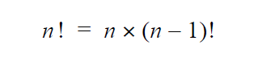

A Recursive Example

Another way to think of the factorial function is as a recurrence relation, which recursively defines a sequence; each further term is defined as a function of the preceding terms.
Without qualification, this is a circular definition. The qualification is that 0! = 1. We can translate this recursive definition into code as well:
int factorial(n)
{
if (n == 0) { return 1; } // qualification
return n * factorial(n - 1); // recursion
}The condition (n == 0) is the simplest possible condition. It is called the base case. If n is not zero, then the function multiplies n times the result of (n - 1)!. It does this, by calling itself again to simplify the problem.
The solution to any recursive problem can be organized like this:
If the answer is known then return it // the base case
If not, then
Call the function with simpler inputs // recursive case
Return the combined simpler results
This pattern is called the recursive paradigm. You can apply this technique as long as:
- You can identify simple cases for which the answer is known.
- You can find a recursive decomposition breaking any complex instance of the problem into simpler problems of the same form.
Because this depends on dividing complex problems into simpler instances of the same problem, such recursive solutions are often called divide-and-conquer algorithms.
 This course content is offered under a
CC
Attribution Non-Commercial license. Content in this course
can be considered under this license unless otherwise noted.
This course content is offered under a
CC
Attribution Non-Commercial license. Content in this course
can be considered under this license unless otherwise noted.